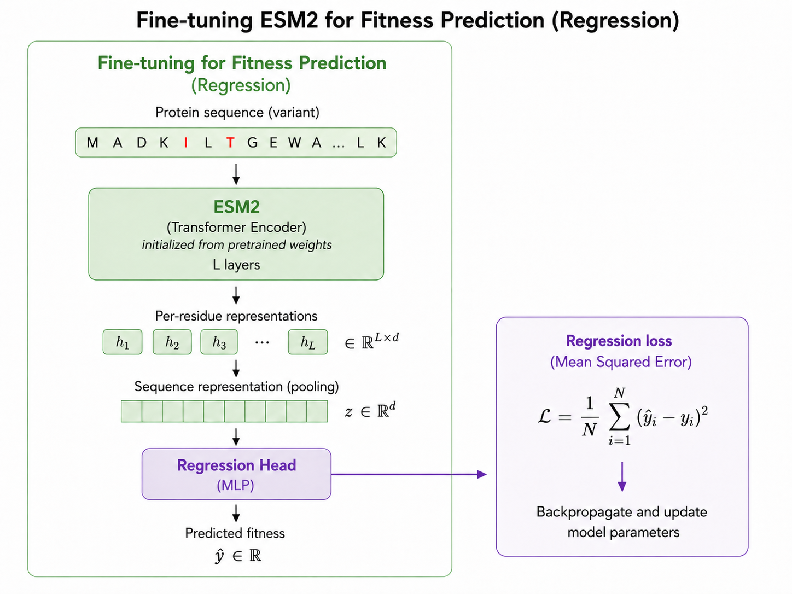
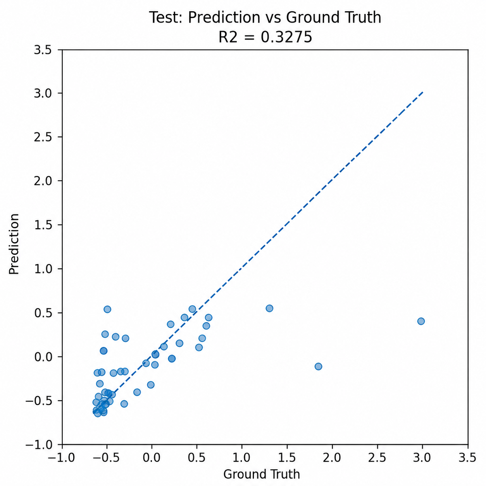
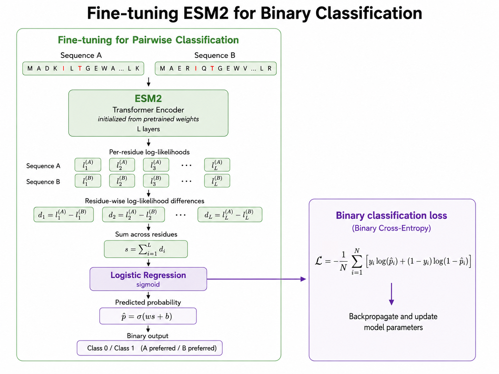
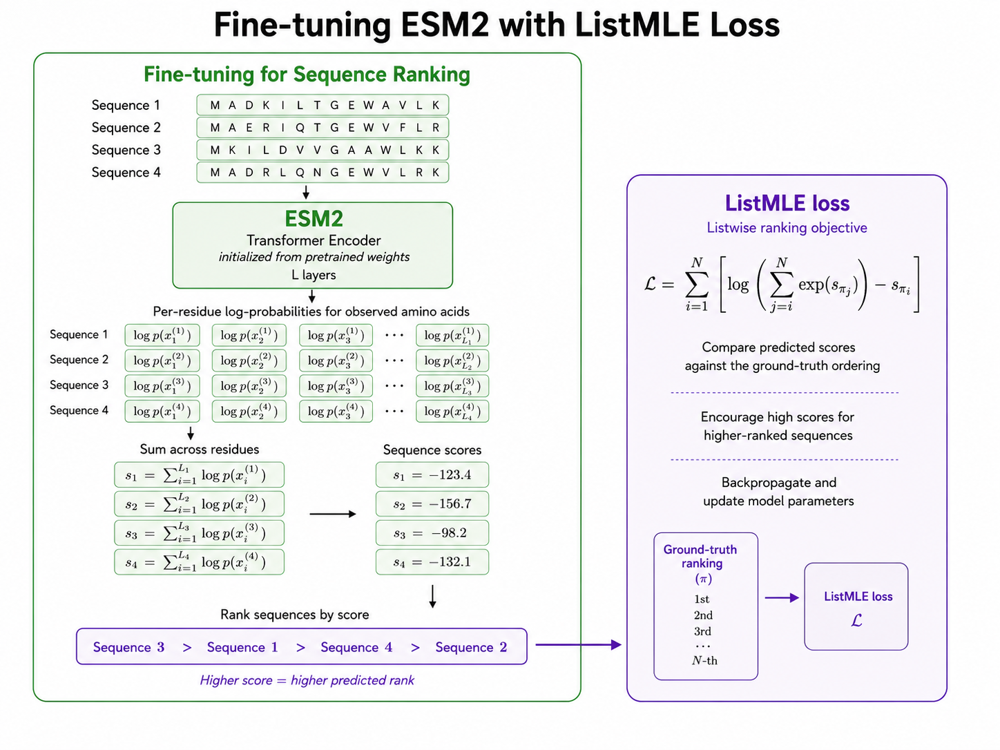
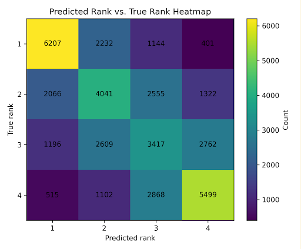
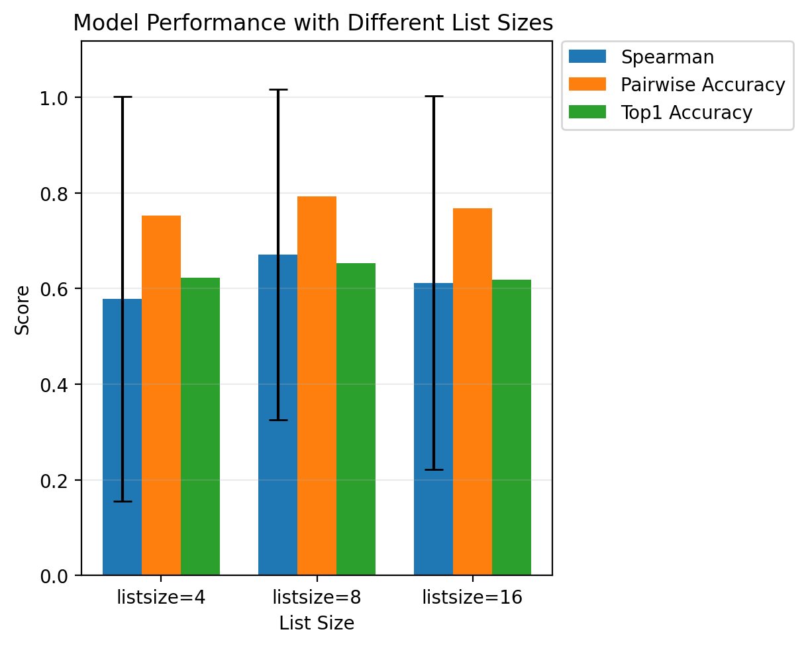
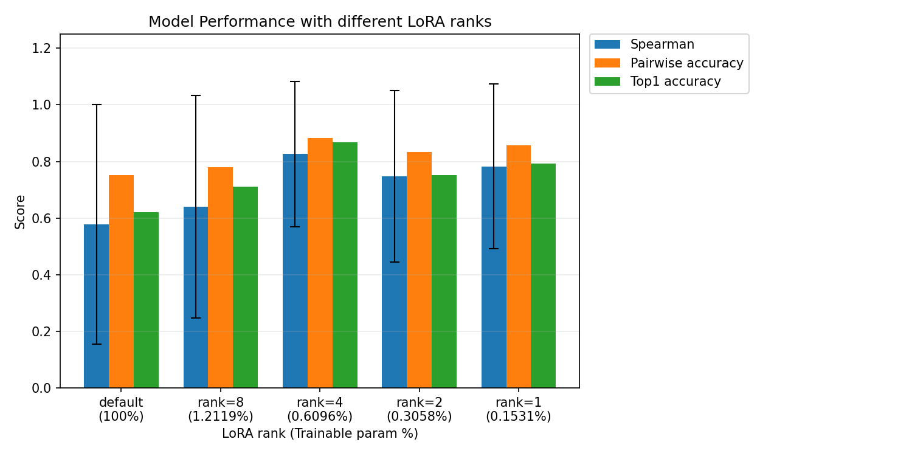
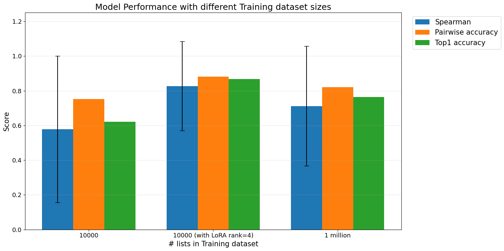

Predicting enzyme fitness from limited experimental data
Directed evolution is one of the most powerful strategies for engineering proteins with improved function. In a typical directed evolution workflow, researchers begin with a parent enzyme, generate large libraries of mutated sequences through random mutagenesis and related diversification methods, experimentally screen those variants, and select improved candidates for additional rounds of optimization. Over repeated cycles, this process can produce enzymes with improved catalytic fitness, activity, stability, specificity, or other desired properties.
However, directed evolution is experimentally expensive. Each candidate variant must be synthesized, expressed, and assayed, limiting the number of sequences that can be evaluated in practice. This creates a central challenge for protein engineering: how can researchers identify the most promising enzyme variants when only a small amount of experimental fitness data is available?
Machine-learning models offer a potential solution by learning relationships between protein sequence and catalytic fitness, then using those predictions to prioritize variants for experimental testing. By focusing experimental effort on the most promising candidates, these models could increase the efficiency of directed-evolution campaigns (Wu et al. 2019).
We explore that question using protein language models—specifically ESM2—to predict and rank enzyme variants from limited fitness measurements.
The challenge: learning from a small enzyme fitness dataset
The dataset was given to us by the The Athavale Group at UCLA.
The dataset contains 242 protein sequences, each 206 amino acids long. Each sequence is paired with an experimentally measured fitness value, defined here as its raw mass spectrometry count. The fitness values span a wide range, from 2,353 to 2,628,389, with a mean of 203,722 and a standard deviation of 327,510. Before model training, all fitness values were standardized using z-score normalization.
This is a small dataset by modern deep learning standards. Protein language models are usually pretrained on millions of sequences, but the downstream supervised dataset here contains only a few hundred labeled examples. That mismatch makes the task difficult: the model must adapt to a specific enzyme fitness landscape without overfitting to the limited experimental measurements.
The first question was whether a pretrained protein language model could be fine-tuned directly to predict fitness values.
Why use protein language models?
Protein language models are transformer-based models trained on large collections of protein sequences. Similar to how natural language models learn patterns in text, protein language models learn statistical and biological patterns in amino acid sequences. These learned representations can capture information related to protein structure, evolution, and function.
The ESM model family is one example of this approach. ESM models learn from massive protein sequence datasets and can be used for tasks such as representation learning, structure prediction, mutation-effect prediction, and protein design. Here, I focused on ESM2, a transformer-based protein language model pretrained with a masked language modeling objective.
ESM-2 Overview
Let a protein sequence be denoted by \(x = (x_1, x_2, \ldots, x_L)\), where each \(x_i\) is an amino acid token. In masked language modeling (MLM), a subset of residue positions \(M \subseteq {1,\ldots,L}\) is selected and masked to produce a corrupted input sequence \(\tilde{x}\). ESM-2 is trained to predict the original amino acids at these masked positions using the remaining sequence context. For each masked residue \(i \in M\), the model learns a conditional distribution \(p_\theta(x_i \mid \tilde{x})\).
The training objective minimizes the negative log-likelihood of the true masked residues:
\[ \mathcal{L}_{\mathrm{MLM}}(\theta) = -\mathbb{E}_{x \sim \mathcal{D},\, M} \left[ \sum_{i \in M} \log p_\theta(x_i \mid \tilde{x}) \right]. \]
By repeatedly predicting masked amino acids from both local and long-range sequence context, ESM-2 learns representations that capture statistical patterns in protein sequences, including constraints related to structure and function (Lin et al. 2023).
ESM2 is useful here because it already contains broad biological knowledge from pretraining. Rather than training a model from scratch on only 242 enzyme variants, fine-tuning ESM2 allows the model to start from sequence representations that already encode general protein patterns.
Baseline approach: direct fitness regression

The most straightforward approach is regression. In this setup, each protein variant is passed into ESM2. The model produces per-residue representations, which are pooled into a sequence-level representation. A regression head then maps this representation to a predicted fitness value.
The training objective is mean squared error between the predicted standardized fitness and the true standardized fitness. Conceptually, this asks the model to learn an absolute mapping from sequence to fitness.

| Test MAE |
|---|
| 0.3077 |
However, the regression model did not perform especially well. On the test set, the model achieved a mean absolute error of 0.3077 on standardized fitness values, with a modest relationship between predicted and true fitness. This result suggested that directly predicting exact fitness values may be too difficult in the limited-data setting.
There are several reasons why regression can be challenging here. First, the model must learn not just which variants are better or worse, but the precise magnitude of their fitness differences. Second, experimental fitness values can span a large dynamic range, making absolute prediction sensitive to outliers. Third, with only a small number of labeled examples, the model may not have enough data to learn a calibrated continuous fitness function.
For many protein engineering workflows, however, exact fitness values are not always necessary. In directed evolution, the key question is often simpler: which variants should we prioritize next?
That motivates a shift from predicting fitness values to ranking sequences.
Reframing the task: ranking instead of regression
Rather than asking the model to predict the exact fitness of each variant, we can ask it to rank variants by fitness. This reframing is closer to the practical goal of directed evolution. If a model can reliably identify which variants are more promising than others, it can help guide experimental screening even if its absolute fitness predictions are imperfect.
Ranking losses are also appealing in small-data settings. They focus on relative ordering rather than exact numerical prediction, which can make the learning problem easier. Instead of requiring the model to match a specific standardized fitness value, the model only needs to assign higher scores to variants with higher measured fitness.
We explored ranking in two stages: pairwise binary classification and listwise ranking with ListMLE.
Pairwise ranking as binary classification

The first ranking formulation compares pairs of sequences. Given two variants, sequence A and sequence B, the model predicts which one has higher fitness.
To do this, both sequences are passed through ESM2. The model computes log-likelihood-style sequence scores based on the amino acids in each variant. The difference between the two sequence scores is then used as input to a logistic regression layer, which predicts whether sequence A or sequence B is preferred.
This converts the problem into binary classification. The model no longer needs to predict exact fitness values. It only needs to decide which sequence in a pair is better.

| Test Accuracy |
|---|
| 0.787 |
This pairwise model performed better than the direct regression approach. On the test set, it achieved an accuracy of 0.787. The confusion matrix showed that the model was able to classify both directions of pairwise comparisons reasonably well, suggesting that the ranking formulation was more aligned with the available data.
However, pairwise comparisons still have limitations. Protein engineering rarely requires choosing between only two variants. More often, we want to rank a set of candidates and identify the best variants from a larger pool. This motivated a listwise ranking approach.
Listwise ranking with ListMLE

The next model was trained using ListMLE, a listwise ranking loss. Instead of comparing only two sequences at a time, the model receives a list of variants and learns to rank the entire list according to ground-truth fitness.
For each sequence in a list, ESM2 produces per-residue log probabilities for the observed amino acids. These log probabilities are summed across residues to produce a single sequence score. Higher scores correspond to higher predicted rank. The ListMLE objective then compares the predicted ordering against the true fitness-based ordering.
This setup directly trains the model to assign high scores to high-fitness sequences and low scores to low-fitness sequences. It also matches the downstream goal more closely: prioritize the best candidates from a set of possible variants.
The ranking model was evaluated with three metrics. Spearman’s rank correlation measures how well the predicted ranking matches the true ranking. Pairwise accuracy measures how often the model orders pairs of variants correctly. Top-1 accuracy measures how often the model correctly identifies the best sequence in a list.

| Spearman | Pairwise accuracy | Top1 accuracy |
|---|---|---|
| 0.578 ± 0.423 | 0.753 | 0.622 |
With list size 4, the ranking model achieved a Spearman correlation of 0.578 ± 0.423, pairwise accuracy of 0.753, and top-1 accuracy of 0.622. These results indicate that the model learned meaningful ranking structure, although there was still substantial variability across lists.
Effect of list size
I also tested ranking models with different list sizes. The goal was to understand whether training on larger candidate sets improves the model’s ability to learn relative fitness.

The model was evaluated with list sizes of 4, 8, and 16. Across these settings, performance remained broadly similar, with some differences across metrics.
I expected performance to decrease substantially as the list size increased, since ranking larger lists is a more difficult task and yields fewer unique training lists from a fixed set of sequences. However, the results are also intuitive because increasing the list size gives each training example substantially more ranking information. A list of N sequences contains N choose 2 pairwise ordering relationships, so larger lists provide richer supervision and may help the model learn a more reliable global ordering of sequence fitness.
Improving generalization with LoRA
A major concern in this work is overfitting. Full fine-tuning updates all model parameters, which can be risky when the supervised dataset is small. ESM2 contains millions of parameters, while the dataset contains only 242 labeled sequences. Updating too many parameters can allow the model to memorize the training data instead of learning a generalizable fitness signal.
To address this, I tested LoRA, or low-rank adaptation. LoRA freezes the pretrained model weights and learns small trainable low-rank matrices for selected layers. Instead of learning a full weight update, LoRA parameterizes the update as a product of two smaller matrices. This greatly reduces the number of trainable parameters.
LoRA is well suited for low-data regimes because it restricts the number of parameters being optimized. This can reduce overfitting while still allowing the model to adapt to the target task.

In the experiments, LoRA improved ranking performance. The full fine-tuning baseline used 100% of the trainable parameters and achieved a Spearman correlation of 0.578, pairwise accuracy of 0.753, and top-1 accuracy of 0.622. In contrast, LoRA with rank 4 used only 0.6096% of the trainable parameters and achieved substantially better performance, including a Spearman correlation of 0.827, pairwise accuracy of 0.882, and top-1 accuracy of 0.867.
This was one of the strongest results in the project. It suggests that, for limited enzyme fitness data, smaller and more constrained fine-tuning can outperform full fine-tuning. Rather than giving the model too much flexibility, LoRA appears to help preserve useful pretrained protein knowledge while adapting only the most relevant parts of the model.
Interestingly, different LoRA ranks produced different results. Rank 4 performed best among the tested settings, outperforming ranks 8, 2, and 1 in the presented comparison. This suggests that there is an optimal amount of adaptation: too much trainable capacity can overfit, while too little may not adapt enough to the enzyme-specific task.
Increasing the number of training lists
Another way to improve model performance is to increase the number of training examples. Because the ranking model is trained on lists of variants, the number of possible training lists can be expanded by sampling more combinations from the available sequences.

When the model was trained with more lists, performance improved relative to the smaller training set. The strongest result shown was from a model trained with 10,000 lists using LoRA rank 4, which achieved higher Spearman correlation, pairwise accuracy, and top-1 accuracy than the baseline trained with 10,000 lists without LoRA.
However, increasing to 1 million sampled lists did not clearly improve performance further. This may be because the additional lists are not fully independent: they are recombinations of the same underlying 242 sequences. Once the model has seen enough relative comparisons among the available variants, simply sampling more lists may provide diminishing returns.
This highlights an important distinction between more training examples and more biological information. Sampling more lists can expose the model to more pairwise and listwise relationships, but it cannot fully replace new experimental measurements from additional variants.
Main takeaways
The results from this project suggest several important lessons for enzyme fitness prediction in low-data settings.
First, direct regression may not be the best objective when only limited experimental data is available. Predicting exact standardized fitness values is difficult, especially when measurements span a wide range and the dataset is small.
Second, ranking objectives better match the needs of directed evolution. In many protein engineering workflows, the most important goal is not to perfectly predict fitness, but to prioritize the most promising variants for the next round of experiments.
Third, listwise ranking with ESM2 can learn meaningful fitness orderings. By scoring sequences and optimizing their predicted order with ListMLE, the model can capture useful relative fitness information.
Fourth, parameter-efficient fine-tuning is especially valuable in this setting. LoRA improved performance while training less than 1% of the model parameters. This suggests that preserving pretrained protein knowledge while making small task-specific updates can be more effective than full fine-tuning.
Finally, more sampled ranking lists can help, but only up to a point. To continue improving performance, the model will likely need more experimental data, data from related protein fitness datasets, or stronger benchmarking against other specialized protein fitness prediction methods.
Future directions
The next step is to train and validate these models with more data. This includes both newly generated experimental data and relevant datasets available online. More diverse fitness measurements would make it possible to test whether the ranking approach generalizes beyond the current enzyme system.
Another important direction is benchmarking against models developed by other groups, such as Primo and FSFP. Comparing ESM2-based ranking models against specialized fitness prediction methods will clarify where this approach performs well and where further improvements are needed.
Overall, this project shows that the choice of training objective matters. When experimental data is limited, ranking enzyme variants can be more effective than predicting exact fitness values. Combined with LoRA, ESM2 provides a promising framework for guiding directed evolution by prioritizing high-fitness variants from small datasets.